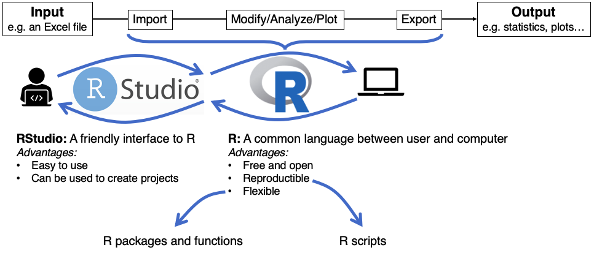
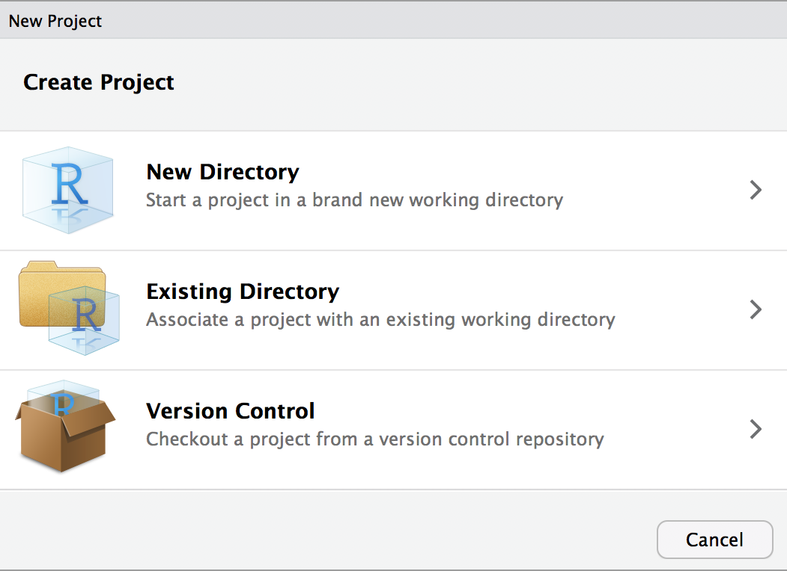

Introduction
In this tutorial, we introduce you to R and RStudio at the beginner level. This self-guided tutorial is meant to get you started in R and acts as a prerequisite for our other tutorials.
First, you will start by learning the fundamentals of the R language through interactive exercises. Then, at the end of the tutorial, you will learn more about working with R on your own computer, creating scripts and projects, and using RStudio, a friendly user interface between you and R.
What is R?
Let’s start with the basics: what is R? It is a programming language used across many sciences and industries. Because it was originally designed by and for statisticians, it excels at tasks like data analysis and data visualization.
What is a programming language?
It is a language that you use to give instructions to your computer. It interfaces between the user and the machine. This common language has particular rules (called syntax).
Why is this important? Why not use Excel?
Why use a language like R instead of point-and-click alternatives like Excel? For many reasons! Firstly, R is free and open-source. And because it is a programming language, it is vastly more flexible and reproducible (more on these later).
Let’s get started!
R as a calculator
The window below is a small interactive environment. You can write R code in it, and then, when you click the Run button, the code is executed by the computer and you receive an output.
We can use it to perform simple calculator-style operations, such as addition (+), subtraction (-), multiplication (*), division (/), or power (^).
The following code computes the answer to \(1 + 1\). Change it so that it computes the answer to \(3^2\), then run it:
1 + 13^2Just like when you use a calculator, you can use parentheses ( ) to define the order of operations. The following code calculates the answer to \(1+\frac{1}{4}\). Change it so that it computes the answer to \(\frac{1+1}{4}\):
1 + 1 / 4(1 + 1) / 4For the most part, in R, spaces between symbols are optional. 1+1 or 1 + 1 mean the same thing, as does (3*2) or (3 * 2).
R also knows common constants, for example \(\pi\) can be accessed with pi. Write code to divide \(\pi\) by zero. What happens?
pi/0Assigning variables
A variable is like a box that can contain any value inside of it. You can name your variables anything you want, provided that it doesn’t start with a number and it does not include any spaces or special characters other than . and _. For example, a variable could be called x, my_variable, or height.
To create a variable, we need to assign a value to it, using the assignment operator <-. For example, the code below creates a variable called x and assigns the value 5 to it. Think of the assignment operator as an arrow, “putting” the value \(5\) into a “box” labelled \(x\).
x <- 5Run the code above. As you can see, assigning variables does not return any output.
Once a variable is created, it becomes part of your working environment, which means that you can use it to perform calculations. Go back to the box above and, in a new line, calculate x + 3, then run the code.
When you perform an operation with a variable (like x + 3 above), R will merely print the result, but it won’t change the variable. To see this, return to the box above, and, in a third line, calculate x^2. When you run the code, the output calculates the square of the current value of x. Because no new value has been assigned to x, its current value is still 5.
If we write down a variable that does not yet exist, R doesn’t know what it means. To demonstrate this, write in the box below the name of any variable that does not exist (e.g. y or does_not_exist) and run it:
If you want to perform a sequence of calculations, you will need to assign intermediate results to variables. For example, say you set x to 2, which you want to square and then add 1 to the result. To do this, create a new line of code in which you assign to the variable x the value x^2. On the third line, calculate x+1. Before you press Run, try to guess what the output will be.
x <- 2x <- 2
x^2
x + 1In the example above, you start with some initial data (the value of x) and then perform a series of operations with those data (square it, then add one). If you ever get different data, you can easily re-do the entire calculation: replace the initial value of x (in line 1) by some other number and press Run. If you had a long list of operations, it would be tedious to re-do the whole analysis from scratch, but because you are using R, all it takes is one click.
Comments
It is best practice to annotate your R instructions with comments. In each line of code, any text preceded by the # symbol will not execute. Comments can be useful to remind yourself and to tell other readers what a specific chunk of code does. In the box below, the first line has a comment. Add similar comments explaining the second and third lines, then press Run.
x <- 2 # create a variable called x, assign the value 2
x <- x + 5
x * 2Go back to the box above and add the # symbol at the beginning of the second line before x <- x + 5. The entire line is now a comment. Before you press Run, try to predict what the output will be.
Functions
Functions are one of the basic units in programming. Generally speaking, a function takes some input (one or more “arguments”) and generates some output.
In R, function argument(s) always go inside parentheses (). Some built-in functions include the natural logarithm (log()), the base-10 logarithm (log10()), the exponential function (exp()), and the square root (sqrt()).
For example, the code below creates a variable called x and assigns it the value of the natural logarithm of 5. In a new line of code, calculate exp(x). Before you press run, think about what you think the outcome will be.
x <- log(5) x <- log(5)
exp(x)The most helpful function of all: the ‘help’ function
You can get information about a specific function by running the command ?<function> or help(<function>) (replace <function> by the name of the function you are interested in). This command opens the help page, where you can find all information about a function’s purpose and its arguments. For beginners, it is useful to concentrate on the “Examples” and “Arguments” section to understand the typical usage of the function better.
Run the code below to read the documentation for the logarithm function. Don’t worry if you don’t understand everything. When you are done, change to code to return the base-3 logarithm of 8. (The answer should be about 1.89.) If you need, use the button on the exercise header to get hints.
?log# Some functions take multiple arguments
log(<power_of_the_logarithm>, base = <base_of_the_logarithm>)# Final solution:
log(8, base = 3)As you can see from the example above, some functions take multiple arguments. When that is the case, some or all of the arguments may be named. For example, the ‘log’ function has an argument named base. Writing the argument names is optional as long as you provide the arguments in the same sequence as given in the “Usage” section of the help page. For example, log(3, 8) is the same as log(3, base = 8).
Furthermore, as you can see with the logarithm example, it is often the case that some of the arguments are optional, i.e. the argument has a default value: argument = default_value. You already learned that you could just call log(3), without specifying the base argument. Whenever this argument is not specified, it is assumed to be base \(e\) by default. When reading the help page of a function, the sheer number of arguments can often be overwhelming. It is often helpful to first concentrate on the mandatory arguments (i.e. arguments without a default value) to get a grasp on the usage of a function.
Data types
So far, we’ve been manipulating numbers. Any variable that holds a number is of type numeric. But R can also handle other types of data. We can find a variable’s data type with the function class(). Complete the code below by calling the function class() to confirm that the variable x is numeric:
x <- 3x <- 3
class(x)A completely different data type consists of alphanumeric strings, like words. In the box below, find the name of this data type using the function class():
x <- "Hello world"x <- "Hello world"
class(x)Note how we surrounded the character string by quotation marks. If we don’t do this, R will think you are referring to a variable name.
A third data type is used for logical variables. Logical variables can only have two values: TRUE or FALSE. You can create a logical variable by assigning one of these values directly. In the box below, assign the value TRUE to the variable x and then confirm its data type:
x <-
class(x)x <- TRUE
class(x)But logical variables are most useful when they describe logical statements such as the ones in the box below. Each of these statements has a logical value: they are either TRUE or FALSE. Run the code below to find out the logical value of each statement.
0 < 1 # smaller than
0 >= 0 # larger-or-equal to
5 == 7.1 # equal to. Note TWO equal symbols.
5 != pi # not equal toChose one of the statements above and assign the entire statement to variable x. Then, use the function class() to check the variable’s data type.
x <-
class(x)# Assign the entire statement to variable x:
x <- 0 < 1Now that you know data types “numeric”, “character”, and “logical”, test your learning with a quick quiz:
Structures
So far, all of the objects we encountered consist of a single element: a single number, character string, or logical value. But R objects can also contain several elements. Examples of R object that contain multiple elements are vectors (one-dimensional) and data frames (two-dimensional).
Vectors
This is a set of elements of the same type. Vectors are constructed with the function c(), which stands for combine.
# Vector of numbers
x <- c(4, 5, 6)
# Vector of characters
y <- c("Hello", "Goodbye")
# Vector of logical
z <- c(TRUE, FALSE, TRUE)Many common descriptive statistics functions, like the mean (mean()), variance (var()), median (median()), standard deviation (sd()), maximum (max()), and minimum (min()), take numerical vectors as arguments. In the box below, assign a vector containing the numbers 3, 5.1, 7, and 1.23 to the variable vector. Then, compute the mean of that vector If you are having a hard time, use the help function (?) to learn how to use the function mean().
vector <- c(3, 5.1, 7, 1.23)
mean(vector)Common mathematical operators, such as +, -, *, /, and ^ can also be used with vectors. The code in the box below performs an operation (in this case, a product) between two vectors of the same length. Run it and examine the result, to understand what this operation means to R. Then, re-assign the value of x to a scalar (a single number). Run the code again and, again, examine the result to understand what this operation means to R.
x <- c(2, 3, 4)
c(1, 2, 3) * xAs you can see, when you multiply two vectors with the same length, R multiplies all of the corresponding elements. The same holds for other operations, such as addition or division. This is called an element-wise operation. When you multiply a vector by a scalar, R multiplies every element of the vector by the scalar.
Data frames
Whereas a vector is a one-dimensional structure, data frames are two-dimensional. You can think of a data frame as a collection of vectors. Data frames are one of R’s most essential data structures. They organise data into a tabular format with rows and columns.
If you have some data from an experiment or study, you will typically save it as a table in a format such as .csv, .txt, or .xlsx. When you load those files into R, you will create a data frame object. At the end of this tutorial (section Using R in your own computer) you will learn how to load a data file stored in your computer into R.
Instead of loading data from your computer, you can also use an online data set: we will use this one, which is a .csv file hosted on our GitHub. Click on the link and examine the format of the data. Notice that the first row consists of column names, that each column corresponds to a data variable, and that each row corresponds to one observation.
These data contain information on oxygen concentrations sampled at Saanich Inlet, British Columbia at several depths and during various seasons. It contains:
Season- season in which measurement was obtained; Fall or SummerDepth_m- depth in meters (m) at which measurement as obtainedO2_uM- oxygen (O2) concentration in micromolar (µM)Add_data- whether additional microbiological data was collected;TRUEorFALSE
For a brief introduction to the data used in our workshops, see Hallam SJ et al. 2017. Sci Data 4: 170158 “Monitoring microbial responses to ocean deoxygenation in a model oxygen minimum zone”. More detailed information on the environmental context and time series data can be found in Torres-Beltrán M et al. 2017. Sci Data 4: 170159. “A compendium of geochemical information from the Saanich Inlet water column”.
You can import .csv data files into R using read.csv(). Since our file is hosted online, the function’s argument should be a character string containing the link to the data set. (What if the file is saved in your computer? Wait until section Using R in your own computer to learn more.)
In the code box below, import the data file using read.csv() and assign it to the variable dat.
link <- "https://raw.githubusercontent.com/EDUCE-UBC/workshops_access/master/intro_R_2hr/data.csv"
dat <- link <- "https://raw.githubusercontent.com/EDUCE-UBC/workshops_access/master/intro_R_2hr/data.csv"
dat <- read.csv(link)You can examine the first few rows of dat using the head() function. Do this in the code box above.
- The first row, containing the column names, is called header.
- Each column can be thought of as a vector corresponding to a single data variable.
- For example, the second row is like a numeric vector, describing the data variable “Depth”.
- All elements of a column must be of the same data type (just like a vector)
- Each row corresponds to a single data observation: in this case, each row is a single study site.
Data frames are integral to data analysis in R. We will learn how to manipulate data frames later in this tutorial.
Quick plots
There are many data visualization options in R. Some data visualization functions are part of R by default, much like other functions you already encountered, such as log() or mean(). Functions that are part of R by default are called base R.
However, the most popular way to create publication-quality figures is to use a package called ggplot2. A package is a collection of functions that enhance R’s capabilities beyond base R. Anyone can create their own functions that solve additional problems, and share them with other users in the form of packages. People can then download those packages and use the functions therein.
In this tutorial, we will only scratch the surface of data visualization in R. We will use the function quickplot(), which is part of ggplot2. When you work in R in your own computer, outside of this tutorial, you will need to install and load ggplot2 in order to use the quickplot() function. You can learn more about this process in section Using R in your own computer.
In the box below, we start by loading our data (like we did in the Structures section), and then we create a simple depth profile (scatterplot) of the Oxygen concentrations with colors indicating the Season that the sample was collected. Complete the code below by replacing the words surrounded by angular brackets < > with the appropriate code. The final part of the code produces the plot.
# Link to data in csv format
link <- "https://raw.githubusercontent.com/EDUCE-UBC/workshops_access/master/intro_R_2hr/data.csv"
# Read csv file
dat <- <function_to_read_data>(link)
# Plot data -- needs ggplot2
quickplot(data = dat,
x = O2_uM,
y = Depth_m,
colour = Season,
main = "Saanich Inlet: Seasonal oxygen depth profile")# Link to data in csv format
link <- "https://raw.githubusercontent.com/EDUCE-UBC/workshops_access/master/intro_R_2hr/data.csv"
# Read csv file
dat <- read.csv(link)
# Plot data -- needs ggplot2
quickplot(data = dat,
x = O2_uM,
y = Depth_m,
colour = Season,
main = "Saanich Inlet: Seasonal oxygen depth profile")Accessing and subsetting data
Accessing vector elements
Every vector has a length, which is the number of elements in the vector. In the code box below, we created a vector called x. Use the function length() to determine the number of elements in the vector:
x <- c(4, 5, 6, 7)x <- c(4, 5, 6, 7)
length(x)Since vectors are one-dimensional and have a defined length, you can retrieve their individual values using vector indices. R uses 1-based indexing, meaning the first value in an R vector corresponds to index 1, the second value to index 2, and so on. The index of the final element of the vector is equal to the vector’s length.
We can extract the value of the 2nd element of a vector using the square bracket operator [], like in the code box below. Run it and examine the output. It is a single number (or, identically, a vector of length 1).
x <- c(4, 5, 6, 7)
x[2]You can also subset multiple elements of a vector, thus outputting a smaller vector. When you want to subset a single element of the vector, you write the index of that element between square brackets (like in the example above). Similarly, if you want to subset multiple elements, you must provide a vector of indices inside the square brackets. Try to modify the code below so that you extract the second and fourth elements.
x <- c(4, 5, 6, 7)
x[c(<index>, <index>)] # You can use a vector of indices to subset vector xx <- c(4, 5, 6, 7)
x[c(2, 4)] # You can use a vector of indices to subset vector xThere is a convenient shortcut to create a vector containing all integers between \(a\) and \(b\): the : operator. In the code box below, we created two vectors: x and y. The logical operator == confirms that the two vectors are the same. Run the code and examine the output.
x <- c(4, 5, 6, 7)
y <- 4:7
x == yIn the second line of the code box below, subset the 2nd, 3rd, and 4th elements of x using square brackets and the : operator. Note how the variable x itself did not change: it is still a vector of length 4.
x <- c(4, 5, 6, 7)
x<subset>
length(x)x <- c(4, 5, 6, 7)
x[2:4]
length(x)If you want to use a subsetted vector later in your code, you need to save it into a variable using the assignment operator <-, like this:
word_vector <- c("Hello", "World")
word_vector <- word_vector[1]
length(word_vector)Note that we redefined the length-2 variable word_vector into a length-1 vector. Had we wanted to keep the length-2 vector available for future use, we could also have assigned the subsetted vector to a new variable name, such as hello_vector <- word_vector[1].
Accessing data frame elements
Since vectors are 1D objects, their elements can be accessed using a single index. To access data frames, which are 2D objects, you need to specify two indices: the row number and the column number. Run the code chunk below, that subsets the element located on the 4th row, 3th column. Then, using what you learned in the previous section, modify the code so that it outputs the 5th, 6th, and 7th elements of the third column.
# Link to data in csv format
link <- "https://raw.githubusercontent.com/EDUCE-UBC/workshops_access/master/intro_R_2hr/data.csv"
dat <- read.csv(link) # Read csv file
dat[4, 3] # 4th row, 3rd columndat[<start>:<end>, 3] # use the `:` notation to identify multiple indicesdat[5:7, 3] # Final solutionIt is often more useful to refer to data frame columns by name rather than number. The easiest way to do this is using the $ symbol, which subsets an entire column from the data frame.
Run the code chunk below and examine the output. Note that the output (which is the entire O2_uM column) is simply an R vector. We can manipulate the dat$O2_uM object just like we would manipulate any other vector. Modify the code so that it outputs only the 5th, 6th, and 7th elements of the O2_uM column. Use the vector subsetting notation [] that you learned in the previous section. If you need help, use the Hint button.
# Link to data in csv format
link <- "https://raw.githubusercontent.com/EDUCE-UBC/workshops_access/master/intro_R_2hr/data.csv"
dat <- read.csv(link) # Read csv file
dat$O2_uM # third column is called Depth_m# Since dat$O2_uM is a vector, you can subset it using square brackets:
dat$O2_uM[<start>:<end>] dat$O2_uM[5:7] # Final solutionSubsetting rows according to condition
Sometimes, we want to access only those observations (rows) of a data frame that obey certain conditions. We can do this with the subset() function, which takes two arguments: (1) the full data frame, and (2) the condition.
For example, imagine that, from our data frame, we were only interested in those observations that were measured in the Fall. Then, we could subset the data like so: subset(dat, Season == "Fall").
In the Quick plots section, we plotted our data’s oxygen concentration as a function of depth. In that plot, four points had an oxygen concentration equal to zero. Complete the code below (replace the words surrounded by angular brackets < > by the appropriate code) to make a plot that includes only those observations where oxygen concentration is larger than zero:
# Link to data in csv format
link <- "https://raw.githubusercontent.com/EDUCE-UBC/workshops_access/master/intro_R_2hr/data.csv"
dat <- read.csv(link) # Read csv file
reduced_data <- <function_to_subset_data>
# Needs ggplot2 package
quickplot(data = <name_of_data_frame>,
x = O2_uM,
y = Depth_m,
colour = Season,
main = "Saanich Inlet: Seasonal oxygen depth profile")# Link to data in csv format
link <- "https://raw.githubusercontent.com/EDUCE-UBC/workshops_access/master/intro_R_2hr/data.csv"
dat <- read.csv(link) # Read csv file
reduced_data <- subset(dat, O2_uM > 0)
# Needs ggplot2 package
quickplot(data = reduced_data,
x = O2_uM,
y = Depth_m,
colour = Season,
main = "Saanich Inlet: Seasonal oxygen depth profile")Subsetting is extremely useful when working with large data. You can learn more complex subsets in our Tidyverse workshop using the tidyverse packages, which are a popular and widely used suite of R package for working with and visualizing data.
Using R in your own computer
So far, we learned the basics of writing in R by using interactive code boxes. But in your daily life, you will run R from your own computer. In this section, you will learn more about the RStudio environment, how to create files and scripts, load data files that are saved in your computer, and install packages.
What is RStudio?
A friendly interface between you and the R console. RStudio is an integrated development and analysis environment (IDE) for R that brings a number of conveniences over using R in a terminal or other editing environments.

You may be running this tutorial from within RStudio. If that is not the case, open RStudio in your computer. When you start RStudio, you will see something like the following window appear:

Notice that it is divided into different “panes”. For now we will focus on the console (left side).
The R console
The console is your view into the R engine. You can use it to give commands to R and immediately see the output.
The > symbol in the console is called the prompt. It is inviting you to type R commands, such as 2 * 2 or mean(x). When you press Return, you can see the output printed by R. Try this out in your own console.
Sometimes, you may accidentally press Return before finishing a complete command. This often happens because you forgot to close parentheses. For example, you may have written: mean(c(1,2,3); this command is incomplete because it is missing one ) at the end. When you give the console an incomplete command, R expects you to complete it. Therefore, the prompt (>) is replaced by a plus sign (+). This is R’s way of telling you to continue writting. When this happens, you have two alternatives. Either you complete the command (e.g., write the missing )) and then press Return or you can press Esc, to cancel the command and show the prompt.
The R Environment
Using your own console, create a new variable, e.g., my_variable <- 3. (Note that RStudio has a shortcut for the assignment operator: Alt+- in Windows or Option+- in a Mac.)
This variable now “exists” for the remainder of the R session. Whenever you type my_variable, it will be like typing the value 3. The set of all variables that have been created in a particular R session is called the environment (also known as the workspace).
In RStudio, you can see all currently-existing variables in the Environment pane (tabbed in the upper right). If you open this pane, you will find your newly-created variable. This is helpful to keep track of the currently existing variables and their current values.
A word of caution: auto-saving of the R environment
By default, when you save your work, RStudio also auto-saves your environment (in an .RData file). This means that when you close RStudio and then re-open it, all of the variables will be created for you immediately.
This may seem practical, because it means that you can start right where you left off without re-importing any data or re-calculating any intermediate steps. In practice, however, this is not a good idea. For example, when you reload a saved environment, you may inadvertently use variables from an older version of your R code.
It will save you many headaches if you learn to avoid thinking of the variables in your environment as “real” files that are saved somewhere in your computer (the way your R scripts and data files are). Instead, if you want to ensure that you can work across multiple sessions, and that your work remains reproducible when you revisit it a long time in the future, you should focus on keeping a good script. You should be able to re-create your environment from your script every session.
It is a best practice to disable RStudio’s environment auto-saving option. Do the following:
- Click Tools > Global Options.
- Where it says “Save workspace to .RData on exit”, select the option “Never”.
- Click “OK” and close the dialog.
Now R will never save or prompt you to save your environment from RStudio.
Scripts
So far, we have been typing commands into the console directly. This simple process lets you “talk” with R one command at a time, and get immediate output. However, this approach is not very practical. Each time you want to execute a set of commands, you have to re-enter them manually, one by one.
That is very different from the code boxes we used throughout this tutorial. In those interactive boxes, you typed multiple lines of code, and then pressed Run, which sent the entire set of instructions to the console, all at once. Each of those interactive boxes is a small script.
R scripts are simply text files that contain all the code that loads your raw data, cleans it, performs the analyses, and creates and saves visualizations. You can save a script in your computer as a file, so that you can run it again in the future, if you need to, and you can edit the script at any point.

Advantages of working with scripts
R scripts maintain a record of everything that is done to the raw data to reach the final result:
- It is very easy to write up and communicate your methods because you have a document listing the precise steps you used to conduct your analyses. This is one of R’s primary advantages compared to traditional tools like Excel, where it may be unclear how to reproduce the results.
- If you get new or different data, you can re-run your analysis in a single click by simply running the script again! (Compare to Excel where you would need to re-do all of the analysis again.)
When to use a script? When to use the console?
Generally, if you are testing an operation (e.g., what would my data look like if I applied a log-transformation to it?), you should do it in the console. But if you are committing a step to your analysis (e.g., I want to apply a log-transformation to my data and then conduct the rest of my analyses on the log-transformed data), you should add it to your R script so that it is saved for future use.
How to create a script?
To create a script, go to File > New File > R Script and save it in a convenient directory. If you open the directory on your computer, you will see the script is now saved there.
Click on the button below to download an example script. Save it into your project directory.
Open the example script in RStudio and examine it. Don’t worry if you don’t understand every single line of code: you should still be able to understand the gist of what the script does (use the help() function if necessary).
You can run the commands from the script into the console line by line. To do this, click on the first line and press Command+Return or the “Run” button in RStudio.
Alternatively, you can run all of the script at once (click the “Source” button in RStudio). If you source the script, you won’t see any output in the console, but all the commands will be executed and you should see all the variables that were created in the Environment pane.
You can also modify this script. For example, you can add other words to the names vector. Once you have done this, you can repeat all the calculations with a single click by sourcing the script: no need to redo your analysis.
Installing and loading packages
In the Quick plots section, we discussed packages. They are sets of functions that extend R’s capabilities. Packages facilitate and enhance analyses. Anyone can make a package and share it with others.
However, because those functions are not part of base R, they do not come pre-installed. You need to install any package you use in your computer. In the Quick plots section, we used the quickplot() function, from the popular data visualization package ggplot2.
Let’s install ggplot2 in your computer. Packages are typically installed from CRAN (The Comprehensive R Archive Network), which is a database containing R itself as well as many R packages. Any package can be installed from CRAN using the install.packages() function.
When you install a package, it is saved into your computer, and once a package is installed, you won’t need to reinstall it again. Copy the following code into your own RStudio console and run it to install ggplot2.
install.packages("ggplot2")After installing a package, and every time you open a new RStudio session, the packages you want to use need to be loaded into the R workspace with the library() function (see the code box below). This tells R to access the package’s functions and prevents RStudio from lags that would occur if it automatically loaded every downloaded package every time you opened it. It is a good idea to load all of the packages you need for a particular analysis at the top of that analysis’ script.
library("ggplot2") # Load ggplot2 package.Paths and the working directory
In all operating systems, files “live” inside a directory (or “folder”). This directory, in turn, is nested within its own directory, which itself is nested within a larger directory, and so on, following a hierarchical structure. The top-most directory in such a filesystem is called the root directory. In Windows, the root directory is usually called C:\Windows; in Mac OS and Linux it is simply called /.
To tell your computer about a given file, it is often not enough to provide just the filename. Many different files with the same filename could exist in a given computer. Instead, you often have to provide the file’s absolute path, which describes the file’s unique location in the directory tree hierarchy. For example, in Mac OS or Linux a file’s absolute path could look like this:
/home/user/docs/Letter.txtand in Windows, it could look like this:
C:\user\docs\Letter.txtWhenever you open R, there is some directory in your environment associated with your current R session. This is called the working directory. It is not always obvious what the current working directory is. You can learn what the current working directory is by typing the following in your console:
getwd() # Which stands for "get working directory"This prints out the path of your current working directory. In RStudio, you can also open the Files pane (on the bottom-right) which shows all the files in the current working directory. Knowing the current working directory is important because whenever you want to load data from your computer (or save data or figures into your computer) R will look for it (or save it) in your current working directory. We will learn more about loading data later on. But first, we will learn about projects, a nice tool that simplifies our interactions with the working directory.
RStudio Projects
Working with absolute paths is very complicated, and can cause a lot of problems. For example, if you move the directory that contains your project, all of the absolute paths will change, and any script that relies on them will not work any more. Similarly, if you send your script to a colleague, it won’t work because the absolute paths will be different in their computer.
To solve this problem, you should always work with RStudio projects. A project is essentially a directory (folder) in your computer that contains all of the files and outputs that you are working on.
When you create a project, RStudio creates a directory containing an .Rproj file. This file ensures that, when you are working on the project, the R working directory is set to its project directory, no matter where in your computer that directory is located.
Advantages:
- When you import data, R automatically looks for the file in the working directory (i.e., the project directory) instead of you having to specify an absolute file path on your computer like
/Users/username/Desktop/. We will learn more about this soon. - If you decide to save any plots or data files, R will also automatically save any of them in the project directory.
Creating an RStudio project
RStudio has a simple interface to create and switch between projects, accessed from the button in the top-right corner of the RStudio window (labeled “Project: (None)”, initially). Start by clicking the Project button in the upper right or going to the File menu. Select New Project and the following will appear.

You can either create a project in an existing directory or make a new directory on your computer. Create a new project on your desktop. After your project is created, navigate to its directory using your Finder/File explorer. You will see the .RProj file has been created.
To access this project in the future, simply double-click the .RProj file and RStudio will open the project. Alternatively, open RStudio and choose File > Open Project.
Whenever you open a project, the working directory is immediately set to the project’s directory. Make sure to save all scripts and data files associated with your project in that project’s directory.
Loading data from your working directory
In the section Quick plots, you learned how to load a .csv data file from a web link:
# Link to data in csv format
path <- "https://raw.githubusercontent.com/EDUCE-UBC/workshops_access/master/intro_R_2hr/data.csv"
# Read csv file
dat <- read.csv(path) But how do you load data from your own computer? Theoretically, you could assign the your data file’s absolute path to the variable path and then follow the same steps. However, as we discussed above, it is often a bad idea to use absolute paths.
It is best practice to save your data file in your project directory. Recall that R always looks for files in the working directory, and if you are using an RStudio project, the working directory will automatically be set to the project directory.
Create a folder named data_folder (or any name you prefer) inside your project directory. Then, use the button below to download our Saanich Inlet data file. Save it inside data_folder.
Now, you can load your data file like this:
# Path of data in csv format
path <- "data_folder/file.csv"
# Read csv file
dat <- read.csv(path) Note that we did not need to specify the full absolute path. Instead, we specify only the parts of the path that are inside the working directory. This is called a relative path. If you send your project to a collaborator, or move it to a different location in your computer, the script will still work, because the relative path will still be the same.
Additional exercises
To practice skills covered in this workshop and prepare for your future R endeavors, please complete the following exercises. When you are done, you can confirm your answers by downloading this script with solutions to exercises 2 through 4 and running it in your computer. Happy coding!
Exercise 1: Install packages
In your computer, install the packages used in the next workshop you plan to attend.
- The R tidyverse: tidyverse, lubridate, cowplot
- Intermediate R programming: tidyverse, lmerTest, devtools, roxygen2
- Statistical models: tidyverse, broom, plyr, lme4, car, lsmeans, MASS, faraway, gapminder, HSAUR3
- Reproducible Research: tidyverse, packrat
- None (but to practice package install anyway): tidyverse
Please note that if you have R v3.3 or older, you may not be able to install tidyverse. In this case, you need to separately install each package within the tidyverse. This includes: readr, tibble, dplyr, tidyr, stringr, ggplot2, purr, forcats
Exercise 2: Calculating a Probability Density
Using R’s built-in functions you can perform some complex calculations. For example, the formula for the Probability Density Function (PDF) of the Normal distribution is:
\[y(x) = \frac{1}{\sigma \sqrt{2 \pi}} \exp\bigg(- \frac{1}{2}\left( \frac{x - \mu}{\sigma}\right)^2\bigg),\] where \(\mu\) is the mean and \(\sigma\) is the standard deviation.
Let’s write a script that calculates the probability density of \(x\) given some mean and standard deviation. In the code box below (or in your own script), complete the missing code (replacing the code surrounded by angular brackets < >) to finish the calculation. You can use the button on the exercise header region to get multiple hints:
x <- 0.8
mu <- 0 # mean
sigma <- 1 # standard deviation
1/(sigma*sqrt(2*pi)) * exp(<enter_code_here>)x <- 0.8
mu <- 0 # mean
sigma <- 1 # standard deviation
1/(sigma*sqrt(2*pi)) * exp(-1/2*((x - <enter_code_here>)/<enter_code_here>)^<enter_code_here>) #Use parentheses to indicate the order of operationsx <- 0.8
mu <- 0 # mean
sigma <- 1 # standard deviation
1/(sigma*sqrt(2*pi)) * exp(-1/2*((x - mu)/sigma)^2) # Final solution(Fortunately, you don’t have to write all that whenever you want to calculate a probability density. There is a built-in function for the probability density of the normal distribution, called dnorm(). In a new line, call dnorm(x, mu, sigma) and check the output to confirm that your solution was correct.)
Exercise 3: Use the help function to learn how to flip coins
R can be used to generate random numbers from different distributions. For example, when you flip some coins you will get a random number of tails (“successes”), drawn from a binomial distribution. In R, you can use the function rbinom() to generate random binomially-distributed numbers.
In you own computer or in the box below, use the help function to learn about the rbinom() function. Then, use this function to simulate three observations, where each observation is the number of tails obtained by flipping ten fair coins. You can use the button on the exercise header region to get a hint.
rbinom(n = <number_of_observations>, size = <number_of_coins_per_observation>, prob = <probability_of_getting tail>)rbinom(n = 3, size = 10, prob = 0.5) # Final solutionRun this command multiple times. Notice how you get a different output each time: this is because the output is a vector random numbers.
Assign the output of the function to a variable and then, using one of the functions you learned in this tutorial, calculate the mean number of tails. Because each observation you flip ten fair coins, the expected number of tails is five. But you only perform three observations, so the mean number of tails will probably not be exactly five. Try increasing the number of observations and running the script again. What happens to the mean number of tails as you increase the number of observations?
Exercise 4: Working with data
Let’s return to our data set on oxygen concentrations in Saanich Inlet. If you haven’t done so yet, download the data file into your project directory (see the section Using R in your own computer, subsection Loading data from your working directory).
Then, load this file as a data frame and:
- Using an R function, determine what data type the
Depth_mvariable is. - Using indexing and the square bracket operator
[]:- determine what depth value occurs in the 20th row
- return the observation (row) where oxygen equals 91.115. Hint: Use the
subset()function.
- Subset the data to observations where depth is deeper than 100 m. Hint: Use the
subset()function. - Create a stacked scatterplot of oxygen concentrations within the two different seasons, colored by whether or not microbial data are available (example below).
Solutions to all exercises
Click on the Solution button in the box below:
library(ggplot2) # required for making a plot in exercise 4
# Exercise 2 --------------------------------------------------------------
x <- 0.8
mu <- 0 # mean
sigma <- 1 # standard deviation
# Normal distribution PDF:
1/(sigma*sqrt(2*pi)) * exp(-1/2*((x - mu)/sigma)^2)
dnorm(x, mu, sigma) # Confirm using R's built-in Normal PDF function
# Exercise 3 --------------------------------------------------------------
# Count nr of tails out of ten coins, three times:
nr_tails <- rbinom(n = 3, size = 10, prob = 0.5)
mean(nr_tails)
nr_tails <- rbinom(n = 3000, size = 10, prob = 0.5)
mean(nr_tails)
nr_tails <- rbinom(n = 300000, size = 10, prob = 0.5)
mean(nr_tails)
# Exercise 4 --------------------------------------------------------------
path <- "data_folder/file.csv" # Path of data in csv format
dat <- read.csv(path) # Read csv file
class(dat$Depth_m) # What type is the Depth_m variable?
dat$Depth_m[20] # Depth of the 20th observation
subset(dat, O2_uM == 91.115) # Observation for which equals 91.115
subset(dat, Depth_m > 100) # Subset such that depth is deeper than 100 m
# Stacked scatterplot:
quickplot(data = dat,
x = Season,
y = O2_uM,
colour = Add_data,
main = "Saanich Inlet: Oxygen in Fall vs. Summer")